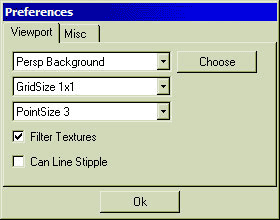
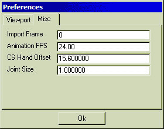

The Preferences Window
There are two tabs to the preferences window the first one relates to the
set up of the viewports and the second deals with miscellaneous preferences. The images
below show the two tabs of the preferences window, click on the part you wish
to know more about.


Property Selector
MilkShape 3D allows the user to set up colours of components used for
modelling. The drop down list allows a specific component to be selected, a
colour for the selected object can then be chosen by clicking the choose
button next to the pull down box. The complete list of changeable components is:
|
Perspective
Background (the 3D view)
|
|
Orthographic
Background (the 2D views)
|
|
Perspective
Grid
|
|
Orthographic
Grid
|
|
X Axis
|
|
Y Axis
|
|
Z Axis
|
|
Vertex
|
|
Selected
Vertex
|
|
Face
|
|
Selected
Face
|
|
Bone
|
|
Selected
Bone
|
|
Selected
Joint
|
|
Keyed
Bone
|
Grid Size
This pull down box allows the user to set the occurrence of grid lines on the grid
in the orthographic (2D) views. Four options are given:
|
Gridsize
1x1 (default)
|
|
Gridsize
2x2
|
|
Gridsize
4x4
|
|
Gridsize
8x8
|
The default grid size is 1x1, this gives the most grid lines and is
therefore easiest to work with. The grid size you use usually depends on how
big the models are that you construct.
Point Size
This drop down box allows the user to select the size of the points that
MilkShape 3D will display. This means the size of the vertices. The higher
the number the easier they will be to select but they might also restrict
your view more as a result. The values are as follows.
|
Pointsize
1
|
|
Pointsize
2
|
|
Pointsize
3 (default)
|
|
Pointsize
5
|
Pointsize 3 gives a vertex large enough to select easily and one which
does not restrict the view very much.
Filter Texture
When texturing a model, texture filters will be created which will mip-map
the texture on the model. Mip-Mapping basically smooths the texture so that
the rasterised pixels
are not obvious. You could say that filtering the texture reduces the
'blockyness' of the texture.
Can Line Stipple
When moving, scaling or extruding a line is created with the start point
at the point where the user initially held the mouse down and the end point
at the current position of the mouse (when the left mouse button is still pressed).
This is a solid line by default. The 'Can Line Stipple' option sets this line
to be a stippled (dotted) line. This also stipples the box line used for
multiple selections.
Import Frame
This one takes a bit of explaining. MD2 and MD3 models which MilkShape
3D supports use an animation mechanism called 'Morph Target Animations'.
If you are experienced in forms of animation then you might have heard
of them. MilkShape 3D supports an animation mechanism called 'Skeletal
Animations', the two types of animation are incompatible. Only one
frame can be opened at a time. This option therefore specifies the
target frame from the MD2 or MD3 file to be loaded into MilkShape
3D.
Animation FPS
This value determines the frequency of the animation (the speed it will
play back at). The default value is 24 fps. Certain games that you export
models for may require a larger or smaller number of frames per second so
remember to check the requirements of your target game.
CS Hand Offset
When importing Counter-Strike models using the Tools->Decompile
CS Left MDL File or the Tools->Decompile CS Right MDL File tools,
this value offsets the loaded model to the value specified from the
centre of the scene.
Joint Size
This allows the user to set the size of the joints that are used in
MilkShape 3D. The default value is 1.0. The size you require may depend on
the size of the model you are building. A size of 1.0 may not be adequate in larger
models as you will struggle to select or even see the joints.
OK Button
This button will save preferences and close the preferences box.
|